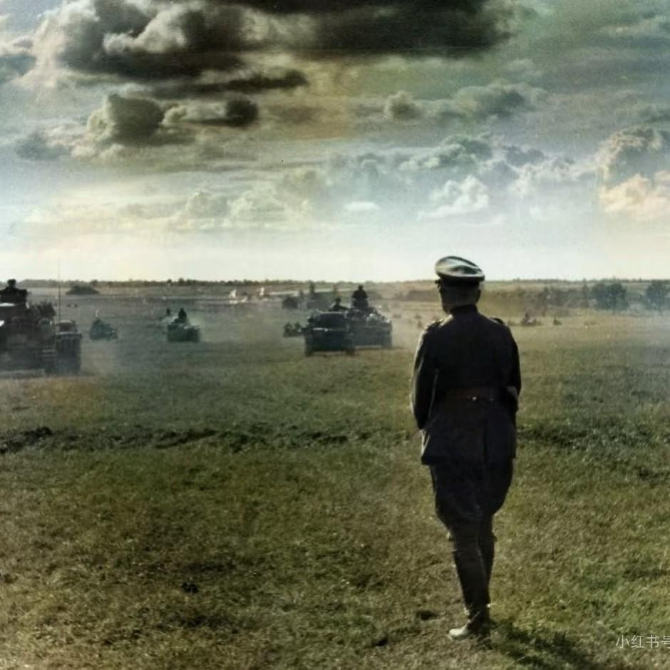

这里是D.Kaufman的地图作品展示网页，主要展示2025年9月以来俄乌战争相关的细致化地图作品。由于地图数据的庞杂性和符号系统的难处理性，相关内容无法在可操作的网页地图上完整显示，因此以图片形式展示。本地图集的最大特点是展示了俄乌战争中双方前线部队的兵力密度，其分析原理并不复杂，但众多OSINT分析师从未进行相关分析，其具体细节图可在下方查看。若各位觉得网站不错，不妨多多转发。 更多内容请关注知乎账户@D.kaufman和Kalyna OSINT(B站知乎同名)。
